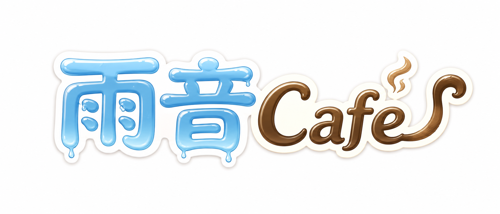
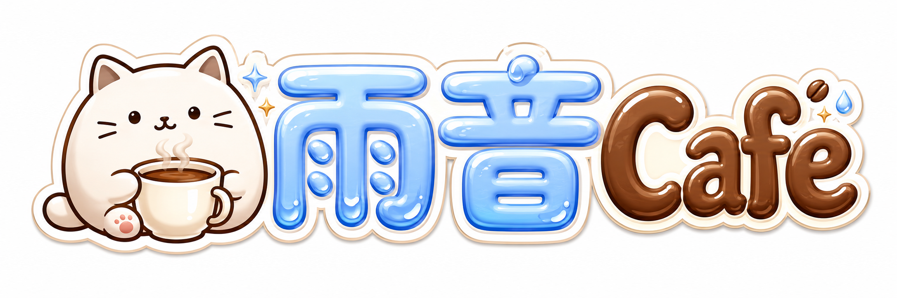
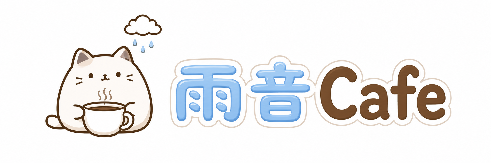
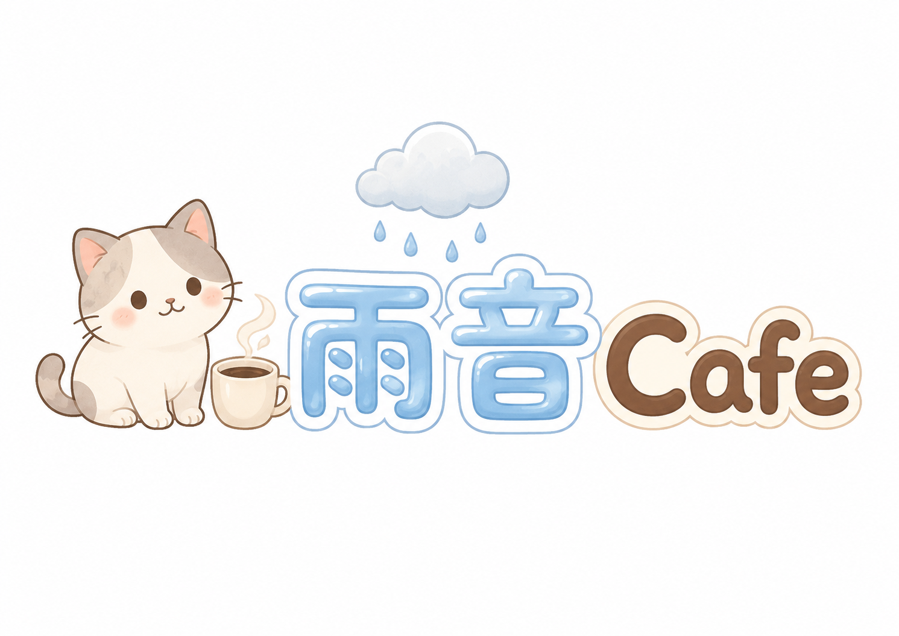
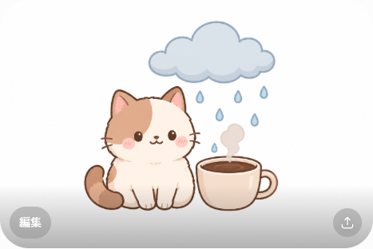
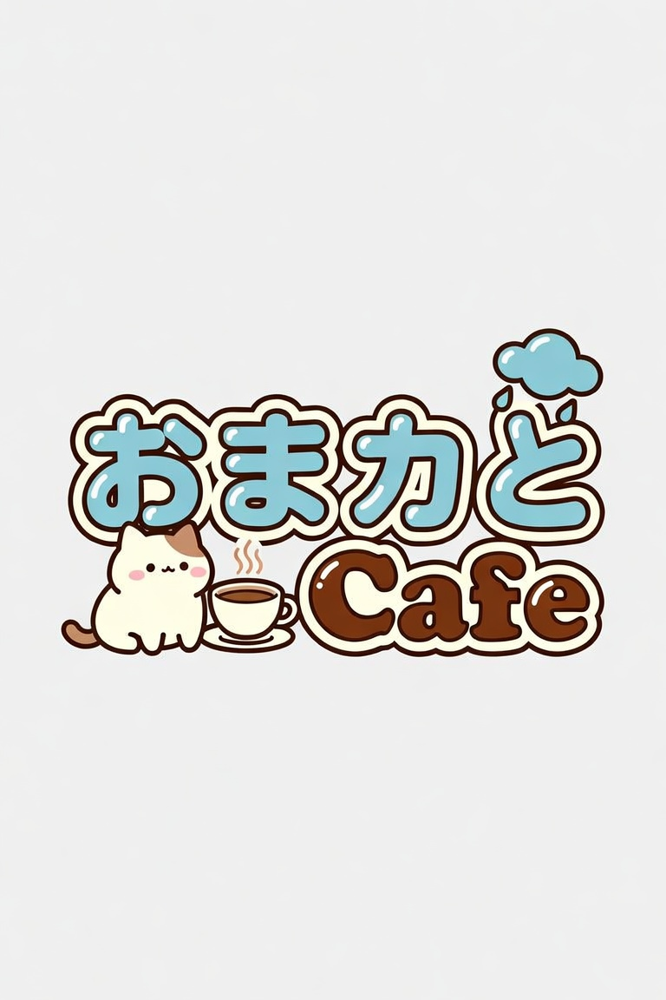
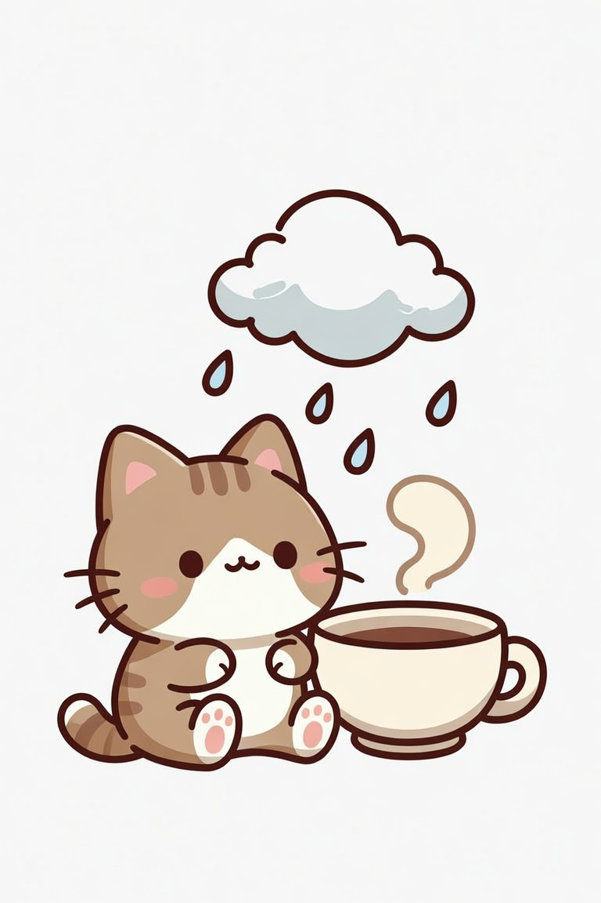
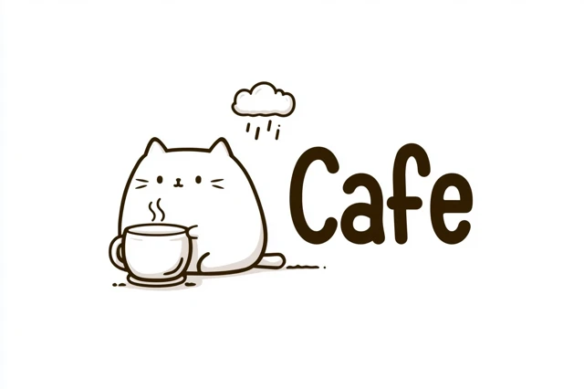
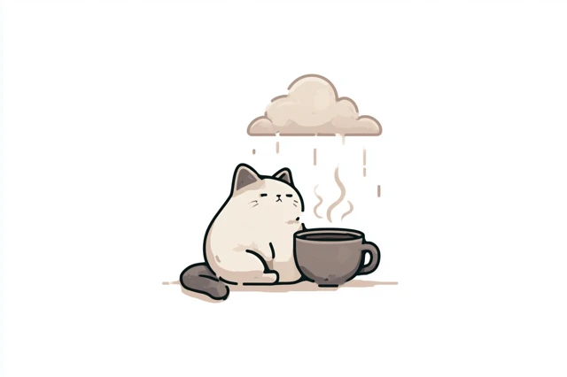

水滴がポタッ→波紋がポワーン→FOCUSと数字がにじみ出て5秒後スタート。数字の下に長いゲージ1本＋4つの丸（今のセットがゆっくり点滅）。Three.jsでリッチにしたよ。読み込むと演出が再生される（もう一回見たいリロードしてね）。
このデザインでOKなら、4セット分（丸が1→2→3→4で進む版）を動画にするよ。直したいとこあれば言って！
修正反映：肉球プリントなし・キラキラ雫なし・猫を1匹ちゃんと・横長。各AIで「文字あり」「文字なし」の2枚。気になるのの番号（例：ChatGPT文字あり）を教えて！文字が崩れてないかも見てね。









※日本語「雨音」はChatGPTが一番きれいに出た。他は崩れがちなので文字なし推奨。選んだやつをKEIが最終仕上げしてね。